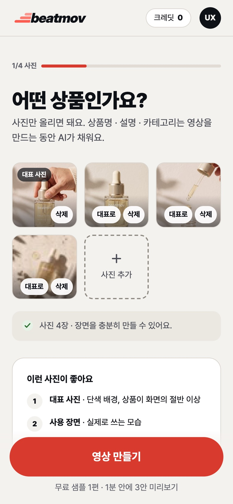
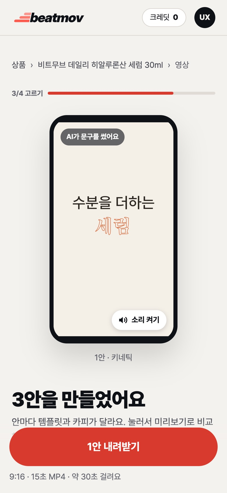
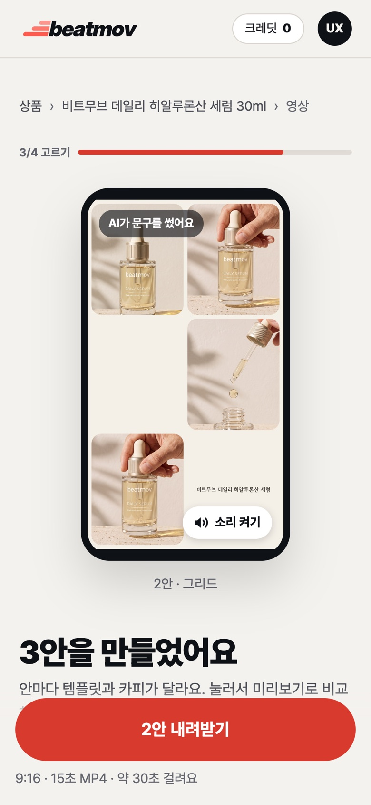
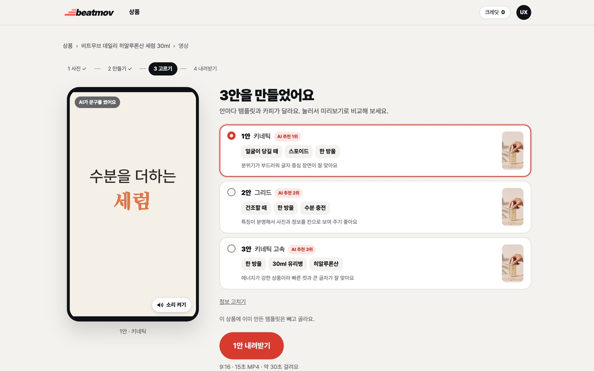

BeatMov is a micro-SaaS for marketplace sellers on Coupang, Naver Smartstore, Amazon and Shopify. The seller uploads photos; AI reads the product, writes the copy, and cuts a kinetic ad on the beat of the music. I designed and built it end to end, working with AI agents as my team.
On Coupang and Smartstore, short product videos sit at the top of the page and in shorts feeds. Most small sellers have only a few product photos. Their options were all bad:
A shoot and an edit cost more than many sellers earn on the product in a month.
Template apps pan across photos with stock music. It looks cheap, and shoppers scroll past.
Writing copy, cutting on the beat and respecting each platform's safe zones is a craft most sellers do not have time to learn.
Quality is the differentiator. Before writing product code I studied reference films frame by frame (cut timing, type size, how long a word stays on screen) and set a rule: no template ships unless it survives a side-by-side with the references. Two early experiments, a beat pulse and camera shake, were removed after review because they felt dizzying.
Each video below was made from a set of plain product photos and the seller's one-line description. Same engine, different template and music, chosen for the product.
Demo products are fictional and branded for testing. Videos play without sound here; in the product every cut lands on a hit in the music.
I split the pipeline so that AI only does what it is good at. Choosing the template and the colours is a documented formula, not a model, so results are explainable and repeatable.
One to ten photos. Name and description are optional.
Type, energy, premium feel, facts it can see. Fills in empty details.
Scores every ready template; three different ones become three options.
Short lines per scene, checked against ad-law and plain-language rules.
Scenes are written in beats, not seconds, so every change lands on the music.
AI may make backgrounds, but the product keeps its original pixels. When a cut-out removed a white bottle cap along with the white background, I changed the design to extend the photo's own background instead.
Every template shows the whole product before any close-up, on any photo shape. A seller's wide underwater scooter lost both wings once; that became a rule for every template.
Block (profanity, illegal claims), warn and log (superlatives, efficacy claims), allow the rest. AI copy may only state facts found in the description.
After a line-by-line copy review, jargon ("signature", "hygienic") is banned or replaced, and one-word lines are not allowed.
The first version asked sellers to fill in a details form before making a video. The redesign cut that step and goes straight from photos to video: the AI fills in the details while it works and shows what it read, so the seller can correct it.




I set up Claude as a small team with clear lanes: development in Claude Code, an independent QA agent that reviews every step and can block a release, a UX and template role that owns the design system and prototypes, and a manager that keeps the schedule. They hand work to each other through written handoffs; I make every decision and keep a decision log.
The same engine renders the browser preview and the final MP4, so what the seller sees is what they download. Videos are rendered on a small rented server; the web app runs at the edge.
Next steps are a free launch in Korea, payments, and two higher production levels: an AI-made background behind the real product, and one short AI-made video shot. Results from real sellers will be added here after launch.